Firefly: Visualization
One primary component of the Firefly tools is the image visualization.
You can view and interact with image files, both FITS and HiPS images  (also see IVOA docs
) formats. This section
covers interacting with the images -- the visualization tools. Tables and Plots are
in other sections.
(also see IVOA docs
) formats. This section
covers interacting with the images -- the visualization tools. Tables and Plots are
in other sections.
All of the interactive image visualization tools work the same basic
way, and here we describe these basic options, in roughly the order
in which you might encounter them in the window.
Contents of page/chapter:
+FITS/HiPS Viewer
+Image Information
+Image Toolbar
+Information on Loading a New Image
+Extraction Tools
+Information on Color Stretches
+Information on HiPS features
+Footprints
+Breaking out of the pane (and going back)
+Image Navigation
+World Coordinate System (WCS) Alignment and Releated
Features
+Coverage Image
+Automatic FITS-HiPS-Aitoff Transitions
+"Catalog" loading
You can interactively explore the image with the mouse. Move your
mouse over any image that is loaded into the viewer. Details about the
image and, specifically, the pixel beneath your mouse cursor, appear
along the bottom left of the image window. Some information is updated
in real time (coordinates); some information (pixel value) is updated
when you stop moving your mouse for a second or two. The image can be
interactively investigated in this fashion.
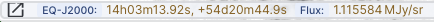
To get more information or to change the units of the readout, click
on icon on the far left to "pop out" a window with additional
information:
In this
example, by clicking on the words "Pixel size", "EQ-J2000", or "Image
Pixel", you can get these options in additional pop-up windows to
change the units of what is shown.
You can make the cursor 'stick' on a particular place on the image --
tick the "Lock by click" box (either in the pop-up or in the lower
right of the image window), and then click on the image at your
desired location. When this is clicked, small "clipboards" appear near
the readout. Click on that icon to copy that position to your
clipboard.
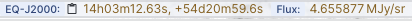
In the pop-up window, the orientation of the image is given with a
compass rose on the right, next to a zoomed-in view of the image under
your cursor.
The label of the image, typically on the upper left of the loaded
image, tells you basic things about the image you are viewing. The
telescope and/or instrument and/or channel and/or data release is in
black. The field of view is in green font; this corresponds to the
(horizontal) width of the image window.

 Two examples
of image labels. The former is from Spitzer Enhanced Imaging Products
(SEIP), IRAC channel 2, and the field of view is 11 arcmin. The latter
is far-ultraviolet (FUV) data delivered by the Local Volume Legacy
(LVL) project, and the field of view is 6.8 arcmin.
Two examples
of image labels. The former is from Spitzer Enhanced Imaging Products
(SEIP), IRAC channel 2, and the field of view is 11 arcmin. The latter
is far-ultraviolet (FUV) data delivered by the Local Volume Legacy
(LVL) project, and the field of view is 6.8 arcmin.
Images can have multiple planes;
the blue arrows shown here allow you to page through the planes. (This
is from the HerMES project and is Herschel SPIRE 350 micron data.)
For HiPS images, the FOV is is the angular size of the width of the HiPS
viewer. Even if the image as displayed is smaller than the window, the
FOV readout is the width of the window, not the image. If you shrink
your browser screen, the FOV can get smaller because the viewer gets
smaller. If you load more than one image, the FOV can get smaller
because two viewers must fit in the same pane. As a result, the HiPS
FOV requested in the search panel are approximate.
For FITS images, the FOV label on FITS images works analogously to the
FOV label on HiPS images. If you zoom out, the FOV will increase even
when the FITS image is entirely within the viewer. That's because the
FOV is what the viewer can show you based on the pixel size. If you
drag the image so that it is only partially seen through the viewer,
the FOV will not change. For FITS images, the cutout size is not the
same as the FOV.
|
The target on which you searched is overlaid on the main image with a
cross-hair marker. You can remove this (or change its color) from the
layers pop-up, described below. |
The image toolbox is always present as a row of tools associated with
the images you have loaded, or that are loaded on your behalf.
Letting your mouse hover over any of these icons will result in a
"tool tip" that appears in order to remind you what the icon does.
Most items apply equally to FITS and HiPS images, but some only apply
to FITS images.
This is the image toolbox when you have a FITS
image loaded:

And, this is the image toolbox when you have clicked on a HiPS image
you have loaded:

The two toolbars are different, but if the same icon appears, it has
the same effect on the image. Many of the icons have a downward pointing
blue triangle, which means that there are additional options in a
pull-down menu that appear when you click on the icon.
We now discuss each icon in the order in which they appear.
- Selecting a new
image
- This icon does not always appear. Clicking on this icon is the
same as selecting the blue "Images" tab (for a discussion of this, see
here). Click on this icon -- or
the blue Images tab -- to add a new image through a new search, or to
change the current image to a new image. To change a HiPS image, see
discussion in WCS section below.
 Tools drop down
Tools drop down
- The choices here look like this:
-
 Saving the image
Saving the image - The
diskette icon will allow you to save the current image. You can save
files to your local disk or to the IRSA Workspace . Note that you control where the file is
saved on your disk through your browser; your browser may be
configured to store all downloads in a particular location on your
disk.
If the current image is a FITS file, you can save it as a FITS or PNG
or regions file to your local disk. If it is a HiPS file, your only
choices are PNG or regions file. Saved FITS images will not save the
color stretches or overlays; it will just save the underlying FITS
image. Saved PNG files WILL include any overlays or annotations you
have placed on the image, but will not include the underlying FITS
image. Saved regions files will not save the underlying image, but
will just save the overlays as a DS9 Regions file. See the DS9
website for more
information on the syntax of these DS9 region files.
Note that you can save the original or a cropped version of a FITS
file; see the "select region" icon below to crop, then click on the
save icon. Be sure to save the cropped FITS image (see annotated
figure). This feature is not available for HiPS images.

Note that if you overlay a large catalog,
then turn around and save a regions file from the catalog overlay, the
full catalog may not be saved to the regions file. If you have
>15,000 sources, enough that the accompanying plot is shown in
shades of grey, not every source will be overlaid on the
image, even if you zoom in, and thus will not be in the
regions file.
The saved PNG is the same size as it is on your screen. If you want a
big version, make the desired image big on your screen (view
one-at-a-time) before saving the PNG.
- Restoring everything to the
defaults
- If you've played around a lot with the image, you may want to undo
everything you've done. Click this button to restore everything to
their original default values. Some layers may persist; remove them
via the layers icon.
- Viewing the image header
- This icon displays a pop-up window with information about the
image. If a FITS image is selected, it will show the FITS header of
the image; if a HiPS image is selected, it will show the HiPS
properties of the image. If you click on the columns in the pop-up, it
will sort the keywords alphabetically by that column. This is useful
for finding individual keywords in particularly densely populated FITS
headers. Click the header again to sort in reverse-alphabetical order,
and a third time to return to the default order. Below are examples of
an original and sorted FITS header. To make this window go away,
click on the 'x' in the upper right of the pop-up, or click "close" on
the bottom.
Further, you can click on the gears in the upper right of the window
to bring up a dialog box via which you can filter down the header
keywords (using the same syntax as other filters):
An example of the HiPS properties window is here:
- Rotating the image to any
angle
- This feature allows you to rotate the image about the displayed
center of your image to any angle of your choice, in degrees. (This
option is only available for FITS, not HiPS, images.) It will rotate
the image counter-clockwise (to the left) East of North if the image
has a WCS embedded in it.

You
can type a number in the "angle" box, or use the slider, to rotate the
image. To bring it back to North-up, click on the "North up" icon in
the pop-up or in the main image toolbar. To exit the pop-up without
making further changes, hit the 'x' in the upper right of the
pop-up.
- Rotating the image so that North is
up
- Images retrieved from the IRSA Viewer are commonly already
oriented such that North is up, or close to it. However, when
interactively investigating images, or loading images from other
sources, you could find yourself in a situation where North is not
necessarily up. Clicking this icon will orient the selected image so
that North is up. (This option is only available for FITS, not HiPS,
images.)
 Flipping the image on the y-axis
Flipping the image on the y-axis
- Clicking on this icon flips the image on the y-axis. (This option
is only available for FITS, not HiPS, images.)
- Add a compass rose
- When you click this icon, arrows appear on the image showing
which direction is North and which is East. Clicking on this icon a
second time removes the compass rose. (You can also remove
this layer via the layers icon, described below.)
 Add a coordinate grid
Add a coordinate grid
- Click on this icon to overlay a coordinate grid on the image.
(Only available for FITS images, not HiPS, but see information on HiPS
grid in the WCS section below.)
Click it again to remove it. Customize the units of the grid (to,
e.g., Galactic coordinates) via the "layers" icon (described
below).
 Measuring a distance
Measuring a distance
- When you click this icon, at first, nothing seems to happen.
However, you can now click and drag to draw a line on the image, and
the length of the line is displayed (in the middle of the line). The
units for the measured distance (and the color of the overlay) can be
changed from the "layers" icon (described below). You can
calculate the difference in RA and Dec separately via the layers icon
as well; find the layer associated with the distance measurement and
tick the "offset calculation" box. When it displays the offset
calculation, it will give you the angle in degrees in one corner, and
the length of the line segment in the RA and Dec directions, in the
units you have specified. When you are done with the distance tool,
you can click on the red
 that appears
next to the image toolbar, or click on this icon a second time to remove
the distance tool. (You can also remove this layer via the layers
icon.)
that appears
next to the image toolbar, or click on this icon a second time to remove
the distance tool. (You can also remove this layer via the layers
icon.)
 Read in a DS9 Regions file
Read in a DS9 Regions file
- When you click this icon, you get a pop-up window from which you
can read in a DS9 regions file from your local disk. See the DS9
website for more
information on the syntax of these DS9 region files. The supported
regions are text, circle, box, polygon, line, and annulus. To make
this window go away without doing anything, click on the 'x' in the
upper right of the pop-up.
- Put a marker on the image
- When you click this icon, a pull-down menu appears with several
possible options:
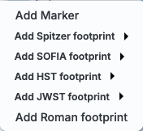
The first
overlay choice (simply called 'marker') is a red circle. Initially, it
appears in the center of the images, and is meant to be moved to
wherever you first click in the image. It looks like this:
. The dash-dot line around it means that it
is 'active', so you can move (click and drag the marker) or resize it
(click and drag the dash-dot boundary). You can change the color of
the marker (and change the label) via the "layers" icon (described
below). You can also remove this layer via the layers icon. There are
several additional options in the pulldown, enough that they have
their own section below.
Note that if you load both FITS and HiPS images at the same time, it
will include a region on the HiPS image that is the footprint of the
FITS images you have loaded. A label appears at the center of that
footprint, which may be disconcerting if you are not zoomed out enough
to see the region itself. Here is an example, zoomed out so it is
clear what is going on:
 Drill down through the image
Drill down through the image
- If your FITS image has multiple planes or HDUs, especially if
each plane or HDU represents a different wavelength, it can be useful
to "drill" down through the image cube at a given position on the sky.
This tool allows you to do just that. When activated, this tool
extracts the data at the place your mouse clicks down through the
cube. For more information on saving the information, see the extraction section below.
 Draw a line in the image
Draw a line in the image
- When this tool is activated, you can draw a line in your FITS
image with your mouse, and it will extract for you the pixel values
along that line. If you have more than one image loaded and visible,
you can shift-click in another image to see the same line in another
image. For more information on saving the information, see
the extraction section below.
 Make points in the image
Make points in the image
- When this tool is activated, you can click in your FITS image with
your mouse, and it will extract for you the pixel values at the
location of your click, creating a catalog for you as you click. If
you have more than one image loaded and visible, you can shift-click
in another image to extract points from another image. For more
information on saving the information, see the extraction section below.
- Zoom drop down
- The choices here look like this:
Four of these also appear in the upper left of each image when your
mouse cursor is in the image.
- Zooming in or out
-
Clicking on these magnifying glass icons zooms in or out of the image.
The readout of the net effect of your zooming on the displayed field
of view (FOV) appears at the top left of each image, in green.
If you click zoom in or out rapidly, a pop-up window appears to allow
you to more rapidly select the zoom level (field of view) you want.
Select the desired level, or click on the 'x' in the upper right to
make the window go away. Here is an example:

You can alternatively zoom using the mouse wheel (or drag forward
and backward on a touchpad or magic mouse).
Note that there is a maximum (or minimum) allowed zoom level, and they
are different for FITS and HiPS images. A notification will appear
when you have reached the maximum (or minimum) allowed zoom level for
a given image. To enlarge images more (or less) than that, please
repeat your search to obtain new images with smaller (or larger)
spatial extent. HiPS images are specifically designed for large areas,
so if you need a big area, use HiPS. If you want to zoom in close
enough to see individual original pixels, your best choice is FITS.
See also the section below on changing coverage
images, specifically that on automatic transitions while
zooming.
- Zooming to a 1-to-1 size
- Clicking this icon will zoom the image such that one pixel in the
image is one pixel on your screen. This option is only available with
FITS images; HiPS images by their nature have pixels of varying sizes,
so this button has no meaning in this case.
- Fit image to screen or fill
screen
-
These two icons are designed to maximize the available space in your
browser window. The first one automatically picks a zoom level such
that the image entirely fits within the available space. The second
one automatically picks a zoom level such that the image fills as much
of the available space as possible (e.g., it is zoomed such that short
axis of the window is filled with the image, whether that short axis
is left-right or up-down).
By default, the images that are returned are frequently but not always
centered on your search target. Clicking on these icons let you see
the whole image that is returned, whether or not it is centered on
your target.
This is available for both FITS and HiPS images, though note that FITS
images retrieved from IRSA using this tool are typically square, and
HiPS images cover the sky, so fitting the image to the screen
might not be what you want to do.
 Color table drop down
Color table drop down
- This icon enables you to change the color table of the
displayed image. (This option is available for FITS and HiPS
images.) When you click the button, a pull-down menu appears
with a wide variety of color table choices. Select your new color
table from the options shown:
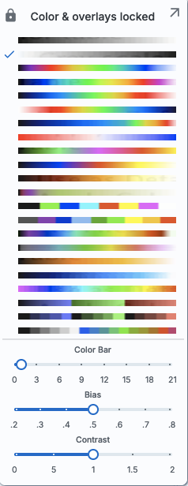
The arrow in the upper right creates a pop-up window out of this
pulldown menu so that you can leave the choices up while settling on
the best option. Click to select the color table you want.
Alternatively, you can use the "color bar" slider to move among the
color tables. Below the color bar slider, there are sliders
controlling the bias and contrast. Click or drag the slider to change
the image display.
 Color stretch drop down
Color stretch drop down
- This icon enables you to change the color stretch of the displayed
image. (This option is only available for FITS, not HiPS, images.)
Because this is complicated, for much more information, please see below.
 Re-center the image drop down
Re-center the image drop down
- Clicking this icon produces a pull-down menu:

By default, "Pan by table row" is turned on, but, depending on how you
have loaded your images, or whether you have catalogs loaded, it may
not seem to do very much. If you have a catalog loaded and are zoomed
in on your images, as you scroll through your catalog, the
FITS image underneath will move as needed when you have selected an
observation in a different part of the sky than was originally shown.
Example of "Pan by table row" functionality: Load the
tool. Search on M101, and ask for all SEIP channels (4 IRAC, 1 MIPS).
When it returns, search on catalogs. Select a WISE/AllWISE catalog,
and ask it for a polygon search covering the image that is loaded.
When the catalog loads, go up to the image toolbox and be sure to
select Align and Lock by WCS (see lock image discussion below for more
information). Sort the catalog by RA by clicking on the top of the RA
column. Note that the images are all now slewed to center the first
object (the furthest east) in the catalog. Click on a source in the
plot near the west edge of the image. Note that the images are all now
slewed to center that newly selected source.
Other choices are to center on the target of the observation, center
the image in the window, or center on a target of your choice. For the
last of those, you can simply center on that target, or center and
leave a marker on the image at that location.
The last option may or may not appear, depending on what you have been
doing before getting to this screen. If it can, it gives you a choice
to center on recent positions. Move your mouse over to the black
arrow to select from a list.
- Selecting a region drop down
- When you click this icon, you are given a choice of a
rectangular selection or an elliptical selection:

After you make that choice, you can click and drag in the image,
selecting a box or an ellipse on the image. This region can be
resized by grabbing and dragging the corners of the box or the pixels
delineating the corners of a box around your ellipse. If you need to
move the image underneath, you can hold the shift key and click and
drag.
When you have selected a region of the image, additional icons
appear above the image, and exactly which icons you see is a function
of whether you are working on a FITS or HiPS image, and whether or not
you have a catalog overlaid: These
icons will allow you to do several things:
- Crop the image
- (FITS only) Crop the image to the selected region. Then you can
save the cropped FITS image via the save icon described above.
Note that, if you have a rotated FITS image such that
a crop would have to bisect pixels, it will show you the region that
encompasses your selection. If you crop at that point, then, it will
crop in image space (such that pixels are not bisected). See the
figure below -- in the original image, north is up. This has been
rotated 45 degrees. The selected region is in white. The yellow
dash-dot line is the crop in pixel space that encompasses the selected
region.
- 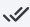Select sources
- (Only if a catalog is overlaid) Select the catalog sources overlaid on
the image within the region. Selecting highlights the sources in the
list and plot with a different color row or symbol.
- Filter sources
- (Only if a catalog is overlaid) Filter the overlaid catalog down to the
sources within the enclosed area. When you choose to impose a
filter via this selection mechanism; the filters icon changes above
the catalog to indicate that there is a filter applied (
 ). To clear the filters, click on the
cancel filters icon (which also appears after you impose filters):
). To clear the filters, click on the
cancel filters icon (which also appears after you impose filters):
 . There is much more on filters in the Tables section.
. There is much more on filters in the Tables section.
- 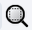Zoom the image
- Zoom the image to fit the selected area into your field of
view.
- Recenter the image
- Recenter the image on the selected area.
 Obtain statistics
Obtain statistics
- (FITS only) Obtain statistics from the image on the region.
The statistics option results in a pop-up that looks
something like this:
Note
that it calculates the location of the minimum and maximum fluxes, and
the aperture and flux-weighted centroids; the flux values given are in
the same units as the FITS file. If you put your mouse over the row of
the table in the pop-up, that location appears as an 'x' on the
image.
When you are working with the selection tool, a red  appears next to the image toolbar to remind
you that you are in that mode. When you are done with the selection
tool, click on that red text to turn it off.
appears next to the image toolbar to remind
you that you are in that mode. When you are done with the selection
tool, click on that red text to turn it off.
 Viewing/changing the layers on the
image
Viewing/changing the layers on the
image
- If you've been following along by trying these various options,
you now have an image with a lot of annotations on it. The number that
appears in blue over the layers icon tells you at any given time how
many layers you have on the currently selected image (the image
outlined in orange). If you click
this layers icon, you will get a pop-up window with a list of all the layers
you have on top of the image. From the pop-up, you can turn layers off
and on, at minimum, but you can often also change exactly what is
displayed and what colors get used for it. To add new things, though,
you need to go to other options within the toolbar. Here is an example
of a well-populated layers pop-up.

Note the target description: This reminds you
of the target on which you searched -- here, it was M16, where the
coordinates were resolved by NED (as opposed to Simbad). The two icons
next in that row indicate, respectively, "copy this location to the
clipboard" and "center image on this position." The tickbox here means
"show this target" (as opposed to the tickbox at the left, which means
"show this image").
This reminds you
of the target on which you searched -- here, it was M16, where the
coordinates were resolved by NED (as opposed to Simbad). The two icons
next in that row indicate, respectively, "copy this location to the
clipboard" and "center image on this position." The tickbox here means
"show this target" (as opposed to the tickbox at the left, which means
"show this image").
Where it's possible to change colors of a layer, click on
the 'colors' link to be taken to a new pop-up from which you can
select a new color.
From here, you can click on your desired color in the top colorful
box. Immediately below that box, you can change the color and
saturation of the top box so that you can select from a different
range of colors. Below that, you can enter numerical Hex codes or RGBA
values (where the value for RGB is between 0 and 255, and A is in
units of percent, e.g., 50 = 50%). Finally, you can also select from
a pre-defined set of 15 colors by clicking on the small box. Note ha
the numerical codes update as you select different colors. Click "OK"
to implement your color choice, or click 'x' in the upper right to
close the window without changing the color.
For catalogs or the search target, you can also
select the symbol shape and size:
To adjust the size, type in the symbol
size in pixels or use the up/down arrow keys to change the size by one
pixel at a time. Click OK to implement your choices.
To delete a layer, click on "delete." Some layers do not have that
option; to remove that layer, click on the corresponding icon from
which you added that feature. Alternatively, you can "show all" or
"hide all" with the buttons on the lower left of the pop-up window.
To make this pop-up window go away, click on the 'x' in the upper
right of the pop-up.
- Lock/unlock image color tables
and overlays
- When this is set to "lock", all the images that you have loaded
are linked together for color tables and overlays. This image lock is
turned on by default. You can click on this icon to turn off this
linkage among the images, enabling you to change images on an
individual basis. Click it again to re-enable it.
 Lock/unlock images
Lock/unlock images
- Depending on what you've done to this point, and what view you
have of the images you've loaded, you may have this "lock images" icon
appear in your toolbar. The main purpose of this icon is to lock all
the images you have loaded for zooming, scrolling, etc. You need to
specify how it locks and for how long. Clicking it produces this
pull-down menu:
The first set of options aligns the images only once; the second set
of options makes the alignment persist ("lock") when you move the
images. You can align by the images' WCS (e.g., RA and Dec), by the
target, by the pixels according to the origin of the coordinate system
in the image header, or by the pixel at the image center. The most
common choice is likely the WCS align and lock. You can align FITS and
HiPS images to each other. This is discussed in more detail in
the WCS section below.
 Getting help
Getting help
- Clicking on this icon takes you to this help page.
To remove an image (or catalog) entirely, click on the small 'x'
in the upper right of the image in the tiled view, or on the small
'x' in the corner of the image (or catalog) tab in the window
pane view.
Specific Information on Loading a New Image
If this icon appeas, you can change the
FITS image being used. Click on this icon to add a new image through
a new search, or to change the current image to a new image. The
window you obtain looks like this:
Your first options are:
- View FITS Imges -- replace the image with another FITS image
- Create a 3-color Composite -- replace the image with a composite of
three FITS images (see below for more information on 3-color
images)
- View HiPS images -- Replace the image with a HiPS image (see below for more information on changing HiPS
images)
Second, you select whether you want to pull an image
from IRSA's archives ("Search"; see below), your own disk ("Use my
image"), elsewhere on the web ("URL"), or the IRSA Workspace ("Workspace"). Note that to use
the Workspace (reading from or writing to it), you'll need to log in.
In the cases other than "Search", nearly all of the additional options
below this line vanish because they are no longer relevant. To
select an image off of your local disk, select "Use
my image", and then tell it where to find the image on your local
disk. To load an image from the web, pick the "URL"
option and enter the URL from which you want an image loaded. To load
an image from the IRSA Workspace, pick the
"Workspace" option and find the file you want to load.
If you would like to load an image from IRSA's archives, select
"Search" and go on to these subsequent additional search
parameters.
Third, you select a target. You may enter a target
name, and have either NED-then-Simbad or Simbad-then-NED resolve the
target name into coordinates. Alternatively, you may enter
coordinates directly. These coordinates can be in decimal degrees or
in hh:mm:ss dd:mm:ss format, or Jhhmmss+ddmmss format. By default, it
assumes you are working in J2000 coordinates; you can also specify
galactic, ecliptic, or B1950 coordinates as follows:
- '46.53, -0.251 gal' means 46.53, -0.251 degrees in galactic
coordinates
- '12.7, +4.3 ecl' means 12.7, +4.3 degrees in ecliptic coordinates
- '19h17m 11d58m b1950' means 19h17m 11d58m in B1950 coordinates
- a source name like 'J140320.67+542028.6' is parsed as 14h03m20.67s
+54d20m28.6s.
- a source name like 'G102.0360+59.7715' is parsed as 102.0360
+59.7715 in galactic coordinates
Examples are given below the text entry box before you start typing in
the box.
As you are completing a valid coordinate entry, it echoes back to
you what it thinks you are entering. Look right below the box in which
you are typing the coordinates to see it dynamically change.
Below the box where you enter the target, you can then specify the
size of the images you want. You may enter the cutout size in
arcseconds, arcminutes, or degrees; just change the pulldown option
accordingly. Caution: pick your units from the
pulldown first, and then enter a number; if you enter a number and
then select from the pulldown, it will convert your number from the
old units to the new units. There are both upper and lower limits to
your search size; it will tell you if you request something too big
or too small. Note that these limits may be image-dependent; larger
images may be available from certain surveys and smaller images may be
available from other surveys. If you want the whole image
tile, just leave the image size blank, then the closest image
tile in its entirety will be returned.
Fourth, you select the data set. There are myriad
choices, which you can filter in various ways to allow you to find
what you need. Statistically, any one spot on the sky will only be
found in a few of these data sets, so it makes sense to weed down the
list, at least a little bit.
On the left hand side, you can filter by :
- Mission (or survey)
- Spitzer, WISE, Herschel, 2MASS, IRAS, ZTF, PTF, AKARI, DSS, SDSS,
MSX, COSMOS, MUSYC, BLAST, IRTS, BOLOCAM, HERON.
- Project Type
- Compilation (meaning, e.g., all the data available from a mission
that was not an all-sky survey), extragalactic, galactic, or all-sky.
- Band
- X-ray, UV, optical, near-IR, mid-IR, far-IR, mm, radio. (Yes, you
can find data from non-IR missions/surveys here, depending on what
projects have delivered back to IRSA.)
To expand or contract the options
below each of these broad categories, click on the black arrow on the
left. To see all of the choices in each of these broad categories,
click on the black arrow and then click "more" near the bottom of the
list. To select any of the options, click on the checkbox on the left.
In response to your selections, two things happen. (1) checked items
appear in red italics above this part of the page, underneath "filter
by"; (2) the list of programs for selection on the right hand side
changes.
On the right hand side, you can select individual surveys and
individual bands therein. To expand or contract the options below each
of the categories, click on the black arrow on the left. To select any
of the waveband options, click on the checkbox on the left of the
individual survey or individual bands.
To find out more information about any given data set, click on the i
in the circle. This takes you to a master list of all data sets
available in IRSA Viewer, from which you can obtain standard
information about the data sets (mission, wavlengths, links to more
information about the program or delivery, and more).
To actually complete the task as requested, choose the "Search" button
in the lower left.
Tips and Troubleshooting
- You don't have to select something on the left side before
selecting something on the right side. If you know exactly what you
want, just jump in and select things on the right and click "search."
- If you select something on the left side, it will limit your
choices accordingly on the right side.
- If you clear filters on the left side, it doesn't affect
selections you've made on the right. You must "clear filters" (on the
left) and "clear selections" (on the right) to remove all filters and
return to the initial state.
- If you want to expand all the choices on the right (to ease in
band selection), click "expand all" to show all options, or "collapse
all" to collapse them again.
- For more information on the data sets included in IRSA Viewer, see this list .
- IRSA Viewer will NOT return not ALL the images for your specified
combination of dataset+band+position; it returns the most centered
science image it can find. This is usually but not always actually
going to be the most useful to you, depending on what you're trying to
do. Some programs delivered PSFs, mosaics created with alternate
algorithms, etc. To find all the data at IRSA for a given target,
enter the position in the big search box on the IRSA home page
(this accesses a tool
called Data Discovery), or navigate specifically to the page
corresponding to your desired data set and search there by position
(this accesses a tool called Atlas).
Example: I want all data covering M16. M16, the Eagle Nebula, is
essentially in the galactic plane. Thus, I don't need to search really
any of the extragalactic data sets. I select on the left hand side,
under project type, compilation, galactic, and all-sky. I am still
left with a long list of programs (though it is much shorter than it
was before). However, I can omit some programs from consideration
based on their names -- programs studying Taurus or Orion are unlikely
to have any data on M16. I can then individually select the dozen or
so data sets likely to cover M16.
Specific information on Extraction Tools
Several tools allow you to extract information from images or image
planes, but only for FITS (not HiPS) files.
- -- Extract down through image planes
- -- Extract a line from the image
- -- Extract points from the image
All three of these follow the same basic structure --
- Intitiate extraction mode
- Set aperture
- Try extraction; repeat if desired
- Pin (retain) extraction if desired
- Download (as table or chart) if desired
- Repeat if desired
- Click on "end extraction" to finish the process.
The drill pokes down through multiple planes, the line moves across
pixels in a plane, and the points extracts points from a plane.
Here, we cover the basic approach, with specifics of each
tool integrated as we go along.
When you click on one of these icons, you enter into the extraction
mode. Red text appears next to the image toolbar to remind you that
you are in this mode:  When you are
done, to end this mode, click on this red "end extraction."
When you are
done, to end this mode, click on this red "end extraction."
When starting out, the pop-up window that you get depends on the tool
you pick.
| For the drill: | for the line: | and for the points: |
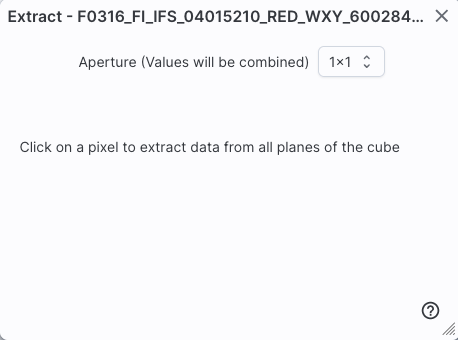 |
 |
 |
In all three cases, the top center of the extract pop-up window has a
pulldown from which you can select the aperture value. You can choose,
in pixels, 1x1, 3x3, 5x5, or 7x7. Values will be averaged.
From this point, you can click on your image, or click and drag for
the line tool. The pop-up then contains a plot of your extraction.
| For the drill: | for the line: | and for the points: |
 |
 |
|
In each of these cases, it does the best that it can to label the
axes accordingly. The cube that is used for the drill example here
follows the spectral data model so that it is recognized as a
spectrum, and it plots against wavelength. The line extraction is a
7x7 average and plots the offset in arcseconds from the initial mouse
click, given the WCS information in the header of the image. The point
extraction is given in image x coordinates, but can be changed to be
in image y coordinates.
Note that for the line, if you have more than one image loaded and
visible, you can shift-click on a new image to see the same line on a
new image. And, for the points, you can shift-click to change images
without extracting points.
Once you have an extraction that you like, you can retain the
extraction for further analysis, in any of three ways. "Pin
table"
extracts the information as a table, just
like any of the other tables in this tool, with an accompanying plot. You can then manipulate the table/plot just
like any other table or plot in this tool. If the tool recognizes
the extraction as a spectrum, you may have
additional capabilities. Download as Table saves the
table to your local disk with all the same
options as a regular table. Download Chart saves
the plot as shown, as a png file.
Once you pin or save your extraction, the tool leaves a "footprint" of
your extraction on the image so that you can remember what the
extraction was. NOTE THAT it is not interpolating
across fractional pixels here. It is averaging if you have asked it to
average, but particularly if your pixels are
large, if you draw a line that is diagonally across pixels, it will be
immediately obvious that it's not interpolating. This line gets
rendered as these pixels:
The point appears on the image at the lower left corner of the
relevant pixel.
You can pin as many different extractions as you want. Each one will
result in new tabs with the corresponding table at the bottom of the
screen. There are navigation aids within the tables section that may help.
Making 3-color Images
You can create 3-color images directly from the image search screen.
Select "Create 3-Color Composite" from the top row of options. The
rest of the pop-up changes to look like the following:
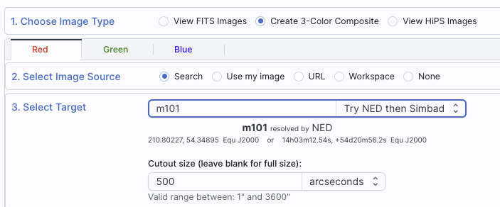
By default, you can select the red plane first; you then populate that
color plane with all the same choices as you would have for a single
channel image. To set the additional color planes, click on "green"
and then "blue" to populate those planes accordingly.
It assumes that you must want the same position for all three color
planes.
Select your options individually for each color plane (red, green,
blue), and click 'Search' in the lower left. Click 'Cancel' to
cancel.
To change the color stretch of each color plane individually, click on
the "Color Stretch" icon in the toolbox.
Tips and Troubleshooting
- You load all three images at once, e.g., you do NOT pick red,
click search, then go back and pick green, click search, then go back
and pick blue, click search. Instead, click red and define what you
want for that image, then go to green and do the same, then go to blue
and do the same. Don't click "search" until you have specified all
three bands.
- The images will be downsampled to the resolution of the red
image. If you, say, load an MSX image into the red plane, a WISE image
into the green plane, and a 2MASS image into the blue plane, all of
the images will have MSX-sized pixels. If you load a WISE image into
the red and green planes, and a 2MASS image into the blue plane, the
images will have WISE-sized pixels.
- You have to set the size of the image separately on each color
plane. It does not automatically assume you want the same size of
sky covered.
Specific information on Color Stretches
This icon enables you to change the color
stretch of the displayed image. (This option is only available for
FITS, not HiPS, images.) When you click the button, a pull-down menu
appears with a variety of choices. You can choose from a set of
pre-selected options:
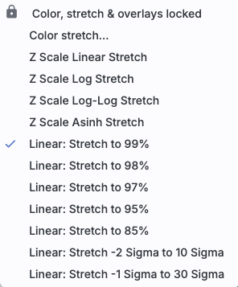
If you
pick the first one, "color stretch", you can customize the stretch. A
pop-up window appears with a histogram of the values in the image, and
you can change the stretch type and range.

If you pick a color stretch from the
pre-defined options, the pop-up window reflects this change. If you
change the color stretch in the pop-up window, the pull-down menu
changes correspondingly.
Example: Display the pop-up for color stretch. From the main
pull-down, pick 'Linear stretch to 99%'. Go back to the color stretch
pop-up. Note that it has filled out the stretch type and ranges to
reflect the current choice. Then -- either with the pop-up window
still up or not -- go back and pick a different pre-defined stretch
from the standard options. Note that the values in the pop-up change
to reflect this current choice. From the pop-up, pick a different
stretch type -- try "histogram equalization." Select "refresh" to
update the images. Go back to the pulldown menu. The last 7 items have
changed to be based on histogram equalization, as opposed to the
"linear" default.
If you have a 3-color image, you can change the stretch in each color
plane separately; select the tab at the top accordingly for red,
green, or blue. By default, it stretches each band independently, and
you can set the parameters in the stretch pop-up accordingly.

As described in Lupton et al. (2004) , a different algorithm may be useful for creating
3-band color images. Select "Hue preserving stretch" to invoke this
option. This stretch should be a brightness-independent
color-preserving asinh stretch, though in practical terms, it seems to
work best for optical images.
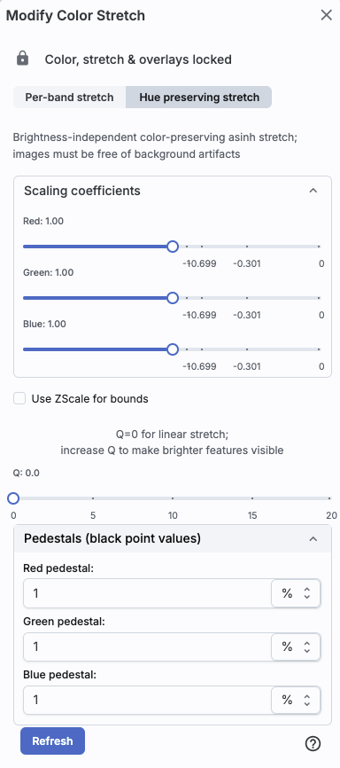
It may be useful to scale individual channels; sliders allow you to do
so. The Q parameter has another slider. For a linear stretch, Q=0;
increase Q to change what features are emphasized. Pedestal values can
also be set to allow the level assigned to "black" to change.
Specific Information on HiPS Features
General Information
HiPS (hierarchical progressive survey) images are
different than FITS images, and as such, the choices of what you can
do with the HiPS images are different than what you can do with the
FITS images. Choices you can make for HiPS images are sometimes
different than what you get for FITS images.
The whole point of HiPS images is to provide on-demand resolution
changes. Zoom out, and it loads large pixels. Zoom in, and it loads
smaller pixels. HiPS images are designed to cover large areas of sky
efficiently. If you need to visualize many degrees, this is the image
type to use.
There are HiPS images from all over the world; the complete list of
HiPS images available from the IRSA Viewer search page includes (once
the "IRSA Featured" checkbox is unchecked) many HiPS images from CDS .
HiPS images have the color and stretch set by the person who
originally made them. The color table can be remapped within this
tool. But, you cannot change the stretch of HiPS images from within
IRSA Viewer. This is why there may be multiple versions of some data
sets in the list of HiPS images.
You can't save HiPS images from within IRSA's tool. To download your
own copy, you will have to track down the original source of the
image.
Overlays on HiPS Images
Catalog searches (see Catalogs section) on
top of HiPS images are limited to a maximum of 5 degrees.
Once you have loaded a HiPS image into the IRSA Viewer, if you click
on the layers icon (), you will have
new, HiPS-specific choices in the layers:

-
HiPS Grid
- To turn on these choices, click the checkbox to the left of "HEALPix
(HiPS) Grid".
Auto: This option overlays a position grid, with the
tile numbers marked in the center of each box. As you continue to zoom
in, when smaller tiles are needed, they are drawn, with the new tile
numbers marked. You may not zoom beyond HiPS Norder level 14 tiles.
The numbers after the "/" is in the "NESTED" (as opposed to RING or
NUNIQ) numbering system; see the IVOA
standards document for
more information.
Grid Match Image Depth: If you select this option,
the grid will adjust to a new level when you zoom in and a new level
of HiPS image both exists and is used for the display.
Grid Level Lock: Selecting this option yields an
additional numerical pull-down menu. The higher number you pick, the
smaller the grid boxes are that are drawn. When this option is
selected, the boxes stay the same size regardless of how zoomed-in on
the image you are.
-
HiPS MOC
- To turn on these choices, click the checkbox to the left of "MOC".
A multi-order coverage map (MOC) is a format developed by the
International Virtual Observatory Alliance to specify sky regions.
In this context, a MOC tells you via a simple boolean yes/no, is there
sky coverage from this data set in this region. You can ask for the
MOC to be displayed via this layers dialog via tile outlines or filled
tiles.
Tips and Troubleshooting: Depending on how you
display a MOC, you may see two shades of color in the MOC, but the
information it is displaying does not included depth of coverage,
merely boolean "is there data there or not." Why is it displaying
shading? Well, it's rounding. For example, a given WISE MOC might be
generated at order 13. At this irder there are 805,306,368 HEALPixels
on the sky, and they are about 26 arcseconds across. When zoomed out
far, there is no point in trying to show each of these pixels, so the
application "rounds up" the MOC to an order in which there are roughly
100-200 displayed HEALPixel polygons horizontally across the image.
When it does htis, it flags the rounded up polygons with the paler
color. So the boundaries of a coverage region in the MOC all get a
paler color. If you zoom in far enough on a MOC, the two-tone colors
go away.
HiPS/MOC
This menu allows you to do two things: Change the HiPS Image, and add
MOC overlays.
- Changing HiPS images
- The choices made by any given creator of a HiPS image may result
in any given region being saturated. Color stretches are set by the
creator of the HiPS map and cannot be changed; color tables can be
changed by this tool. If the HiPS map as shown does not suit your
needs and you wish to change the HiPS image, click on the "HiPS/MOC"
menu, and then click "Change HiPS". It brings up this pop-up:

Things to note:
- To select a new image, click on the row corresponding to the new
HiPS image you want, and click "Change HiPS" on the bottom left.
- To cancel without selecting a new image, click "Cancel."
- This is an interactive table, so all the filtering and column manipulation tools apply here
too. You can filter down the columns to find the image you want to
use.
- To learn more about each HiPS map, click on the i with the circle
in the second column. It will spawn another window with standardized
information about the HiPS map.
- By default, it shows HiPS maps corresponding to IRSA data
collections. To see a more comprehensive list, unclick the box marked
"IRSA Featured."
- Adding a MOC Overlay
- It is often useful to see what other data are available. Looking
at a Herschel/PACS far-IR HiPS map? Overlay a Chandra MOC to see what
X-ray data might be available to go with your IR data. Click on the
"HiPS/MOC" menu, and then click "Add MOC Layer." It brings up this pop-up:
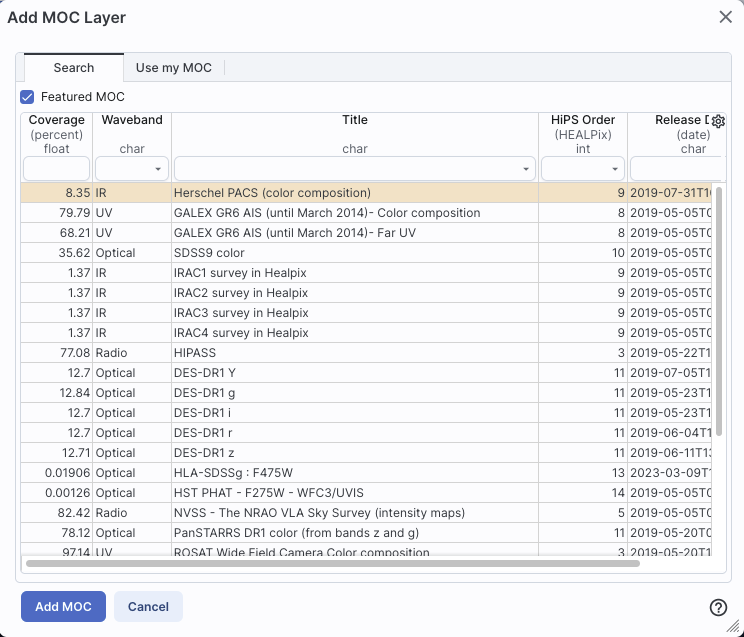
Things to note:
- Coverage (the first column) is the fraction of the sky covered by
that MOC.
- To select a new MOC, click on the row corresponding to the new
MOC you want, and click "Add MOC" on the bottom left.
- To cancel without selecting a new image, click "Cancel."
- This is an interactive table, so all the filtering and column manipulation tools apply here
too. You can filter down the columns to find the image you want to
use.
- By default, it shows MOCs likely to be most interesting for IRSA
users. To see a more comprehensive list, unclick the box at the
top left.
- If you have your own MOC FITS file, you may upload it via the
"upload" button on the lower right.
- If you try to upload a MOC FITS file via the catalogs interface, it will
behave as if you have uploaded it here.
Footprints
The marker icon () has a pull-down menu with
several possible options:
Any
of the options with an arrow on the right can expand to additional
subsidiary choices, e.g.,:
We now describe these various footprints here.
For each of these choices, the markers appear initially in the center
of the loaded images. The first mouse click you make in any of the
images will move the marker to that location.
Each of these marker choices, when overlaid and/or selected as
'active', has a dot-dash square around it. If it is asymmetrical (most
of them are), it has an additional "appendage" and a red plus at the
center of the footprint:

These so-called "handles" allow you to resize and/or rotate the
marker, depending on the nature of the marker. These handles only
appear when the marker is selected as active; if you wait a few
seconds, they vanish.
Tips and Troubleshooting
- Some of these footprints are large. If you have a small
image, some of these footprints will be larger than your image. Zoom
out to see it, or find a larger image to use. If you overlay, say, a
Nancy Grace Roman Space Telescope (formerly WFIRST) footprint on a
2MASS image, you may need to zoom out a considerable amount before you
can see the Roman footprint. You will see the center indicator of the
marker before you will see the Roman footprint itself.
- You can add multiple copies of the same marker using the layers
pop-up (described generally above). From the layers pop-up, there is
a link right under the 'angle' option that says "Add [marker type]" --
click on that to get an additional marker of the same type. You can
also add a label to the marker from the layers pop-up, or change its
color.
- If you have many footprints on the same image, you may have
trouble grabbing and moving footprints lower in the stack of layers on
the image. For example, overlay footprint 1, then footprint 2, and you
might have a hard time grabbing and rotating footprint 1 after
footprint 2 has been added. The only workaround here is to use the
layers pop-up (described generally above) to hide footprint 2, then
move footprint 1, then restore footprint 2.
- If you have images of very different resolutions loaded
(e.g., IRAS and really anything else), sometimes it struggles to
render the marker on each image. You may need to place markers on one
image at a time. (Unclick the "lock overlays" button to place markers
one image at a time.)
The first overlay choice (simply
called 'marker') is a red circle.
The remaining markers are all footprints from various telescopes:
Spitzer, SOFIA, HST, JWST, and Roman. HST, JWST and Roman are derived
from information provided via MAST (see http://gsss.stsci.edu/webservices/footprints/help.html
.) For JWST and Roman in
particular, they are pre-launch values.
 Spitzer/IRAC 3.6 and 4.5 micron
footprints. These two footprints are placed separately
from each other. The footprint can be moved or rotated. Click and drag
the center of the footprint. A circle appears with four small circles
("handles") around it. Grab and drag the small circles to rotate it,
or drag the big circle to move it. Change the color, delete, or add
more copies of the IRAC footprints from the layers pop-up.
Spitzer/IRAC 3.6 and 4.5 micron
footprints. These two footprints are placed separately
from each other. The footprint can be moved or rotated. Click and drag
the center of the footprint. A circle appears with four small circles
("handles") around it. Grab and drag the small circles to rotate it,
or drag the big circle to move it. Change the color, delete, or add
more copies of the IRAC footprints from the layers pop-up.
SOFIA footprints.
Several different SOFIA footprints are available; the graphic here
shows a selection of them. The available footprints (all of which are
placed separately) are:
- FIFI-LS
- Blue (50-120 microns)
- Red (110-200 microns)
- FLITECAM
- Imaging
- Grism ABBA
- Grism AB
- FORCAST
- FPI+
- HAWC+
- 53 microns (Band A), Total Intensity
- 53 microns (Band A), Polarization
- 89 microns (Band C), Total Intensity
- 89 microns (Band C), Polarization
- 154 microns (Band D), Total Intensity
- 154 microns (Band D), Polarization
- 214 microns (Band E), Total Intensity
- 214 microns (Band E), Polarization
Change the color, delete, or add
more copies of the SOFIA footprints from the layers pop-up.
 HST footprints.
You can overlay the whole focal plane footprint, shown here, or
individual instrument footprints (NICMOS, WFPC2, ACS/WFC, ACS/HRC,
ACS/SBC, WFC3/UVIS, and WFC3/IR). Consult the HST documentation for specifics on which apertures are which. The
footprint can be moved or rotated. Click and drag the center of the
footprint. A circle appears with four small circles ("handles") around
it. Grab and drag the small circles to rotate it, or drag the big
circle to move it. Note that if you overlay the
footprint on a very small image, nothing will appear to have happened.
You need at least a 45 arcmin image to comfortably see the footprint.
Change the color, delete, or add more copies of the HST footprints from
the layers pop-up.
HST footprints.
You can overlay the whole focal plane footprint, shown here, or
individual instrument footprints (NICMOS, WFPC2, ACS/WFC, ACS/HRC,
ACS/SBC, WFC3/UVIS, and WFC3/IR). Consult the HST documentation for specifics on which apertures are which. The
footprint can be moved or rotated. Click and drag the center of the
footprint. A circle appears with four small circles ("handles") around
it. Grab and drag the small circles to rotate it, or drag the big
circle to move it. Note that if you overlay the
footprint on a very small image, nothing will appear to have happened.
You need at least a 45 arcmin image to comfortably see the footprint.
Change the color, delete, or add more copies of the HST footprints from
the layers pop-up.
 JWST footprints.
You can overlay the whole focal plane footprint, shown here, or
individual instrument footprints (FGS, MIRI, NIRCAM, NIS, and NIRSPEC).
Note that if you overlay the footprint on a very
small image, nothing will appear to have happened. You need at least a
30 arcmin image to comfortably see the entire JWST focal plane. Please
consult the JWST
documentation for details
about the footprints. In all cases, if the footprint is 'active', a
circle near the middle of the footprint will appear with four small
circles ("handles") around it. Grab and drag the small circles to
rotate it, or drag the big circle to move it. Change the color,
delete, or add more copies of the footprints from the layers pop-up.
JWST footprints.
You can overlay the whole focal plane footprint, shown here, or
individual instrument footprints (FGS, MIRI, NIRCAM, NIS, and NIRSPEC).
Note that if you overlay the footprint on a very
small image, nothing will appear to have happened. You need at least a
30 arcmin image to comfortably see the entire JWST focal plane. Please
consult the JWST
documentation for details
about the footprints. In all cases, if the footprint is 'active', a
circle near the middle of the footprint will appear with four small
circles ("handles") around it. Grab and drag the small circles to
rotate it, or drag the big circle to move it. Change the color,
delete, or add more copies of the footprints from the layers pop-up.
Nancy Grace Roman Space Telescope
focal plane footprint. As above, the footprint can
be moved or rotated. Click and drag the boresight (the cross hairs),
which appears by default to the upper right of the array of squares.
A circle appears, centered on the boresight, with four small circles
("handles") around it. Grab and drag the small circles to rotate it,
or drag the big circle to move it. Note that if you
overlay the footprint on a very small image, nothing will appear to
have happened. You need at least a 60 arcmin image to comfortably see
the footprint, and even then you will probably have to click and drag
to see the entire footprint. Consult the Roman
documentation for
specifics on the apertures. Change the color, delete, or add more
copies of the Roman footprint from the layers pop-up.
Breaking out of the pane (and going back)
Panes: If you have both images and catalogs
loaded into the IRSA Viewer, the screen is broken up into panes - one
for images, one for catalogs, and one for plots from the catalog. If
you have more than one image loaded in, the image pane is further
subdivided.
Make it big! For some purposes, it is useful to
individually view just the table, or the images, or the plots, as
large as possible. In any pane, this icon appears in the upper right of the pane.
Clicking on it will expand the pane into a larger window, as big as
possible given your browser size.
Go back the way it was:  The
large "Close" arrow at the upper left is always available in the
expanded views, and enables you to return back to the pane view.
The
large "Close" arrow at the upper left is always available in the
expanded views, and enables you to return back to the pane view.
Special case of images only: If you have only images
loaded in, then the images are taking up all of your browser window,
and it is already, by default, in this expanded mode. There's no
'close' arrow in the upper left since there is nothing else loaded
in.
Removing things: To remove an image (or catalog)
entirely, click on the small 'x' in the upper right of the image in
the tiled view, or on the small 'x' in the corner of the catalog tab
in the window pane view.
Also see the next section on image navigation.
Image Navigation
Single or Tiled Images
When you have many images loaded in, you can have icons like this:
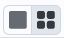 that portray (in icon form) the
different views you can have of the images you have loaded. The first
icon (the big square) denotes "show one image at a time." The second
icon (the cluster of four squares) denotes "show smaller images of all
the images I have loaded at once," e.g., tiled images. Whether the
images (tiled or not) take up all the space or not depends on whether
you are viewing in panes or in the full-screen mode (see immediately
above on Breaking out of the pane).
Image List
Depending on what you have loaded, you may have an additional icon:
Clicking on this icon brings up a
list of the images you have loaded, with some additional information
on each one. This list is a table like any
other in this tool. The power of this table is best demonstrated
by an example.
Example: Load the tool. Search on M101, with the default image size.
Select all bands from the following data sets: SEIP, DUSTiNGS, LVL,
MIPS_LG. Search. When the tool comes back, click on the image list
icon above and obtain this pop-up:

This table shows that it found
images of M101 from SEIP, and some LVL bands, but nothing in DUSTiNGS
or MIPS_LG. You can use the table to omit the failed images all at
once: click the down arrow at the top of the "Status" column, tick the
box next to "Success" and then click "filter." The failed images are
removed all at once from the table and your display. Now, click the
top of the "Wavelength" column. The table is sorted by wavelength, and
the images in your display are as well.
You can remove selected rows, or delete the failed images with one
click; click on the corresponding button on the lower right of this
window.
The "help" links in the far right of this table take you to a master
list of all data sets available in IRSA Viewer, from which you can
obtain standard information about the data sets (mission, wavlengths,
links to more information about the program or delivery, and more).
Paging through single image views
If you have many images loaded in and click on the single big square
to view one image at a time, you may be provided with navigation aids in
the upper right, like this:
The arrows allow you to scroll through your list of images, sorted as
specified in the image table. The green dot in the list of blue dots
shows you where your currently displayed image is in the set of loaded
images. The "auto play" tick box triggers automatic scrolling through
each of the loaded images.
Removing things: To remove an image (or catalog)
entirely, click on the small 'x' in the upper right of the image in
the tiled view, or on the small 'x' in the corner of the catalog tab
in the window pane view. Closing the upper-right image leaves your
mouse on or near the x for the next image that fills that corner,
allowing multiple images to be closed with minimal mouse movement.
World Coordinate System (WCS) Alignment and Related
Features
As described above, there are two different lock buttons on the image
toolbar, one () for the color
table/stretch/overlays, and another, different one () for WCS matching. This section describes
the image locking in more detail.
The main purpose of having lock buttons at all is to make it easier to
change color tables for everything at once, or to zoom/scroll all the
images at once.
To use either of the locking buttons: Select an image by clicking on
it; note that your selected image is outlined in orange. Lock by color
and then change the color table in that selected image; all the images
change color tables. Lock by position and all the images align
to the same scale as your selected image.
Aligning images by position on the sky is likely to be the most common
use of locking. You can align FITS and HiPS images to each other.
When you have locked the images, if you zoom, click-and-drag, etc.,
then all the images move together. This option only makes sense if all
of your loaded images are of the same region of sky. Unlike in other
IRSA tools, it's quite possible in IRSA Viewer to have images loaded
from many different targets or other situations where you likely you
don't want all of the displayed bands to change together, which is why
locking by position of any sort is an option distinct from locking
color tables.
When aligning images, you can specify how the images align and for
how long. Clicking the lock images icon produces this pull-down
menu:
The first set of options aligns the images only once; the second set
of options makes the alignment persist ("lock") when you move the
images.
You can align by the images' WCS (world coordinate system,
e.g., RA and Dec), by the target (align by target on the screen,
regargless of position in the sky), by the pixels according to the
origin of the coordinate system in the image header, or by the pixel
at the image center. The most common choice is likely the WCS align
and lock.
Here are examples of different alignments, left to right: align by
WCS, by pixel origin, and by pixel at image centers.


Note that aligning by WCS puts North up, and aligned so that each
image has the same angular scale.
In contrast, here is an align by target - several different spiral
galaxies, but the target used for each image is in the center of each
image tile.

Coverage Image
If you have launched IRSA Viewer by initially doing a catalog search
(as opposed to an image search), when the catalog is loaded, it will
pick an image on your behalf, called a coverage image.
If you have launched IRSA Viewer with images and then do a catalog
search, it will generate the coverage image for you and create a new
tab under your loaded images.
The next subsection covers more details about the coverage image.
Automatic FITS-HiPS-Aitoff Transitions
 Coverage images can have many choices;
it could look something like either of these screen shots. In this
section, we cover these choices from left to right.
Coverage images can have many choices;
it could look something like either of these screen shots. In this
section, we cover these choices from left to right.
Type of image.
- An Aitoff projection (selected in the first example, indicated with the
darker grey) is an all-sky projection (in this case, a DIRBE 60 micron
image). This is showing the results of an all-sky search; if you
searched a smaller region, you may not have Aitoff as an option.
- A search over a large region might result in a HiPS image, or you
can force it to give you a HiPS image by clicking on "HiPS" in the
upper left of the coverage image. It will load a HiPS image
corresponding to your current target. HiPS images are
created specifically to enable fast, dynamic resolution changes; zoom
in and find smaller pixels than if you zoom out. HiPS images are
designed to cover large areas of sky efficiently. HiPS images are
limited to the color and stretch set by the person who originally made
them. Choices of what you can do and what you can manipulate with HiPS
images can be different than your choices for FITS images.
- A search over a small area will result in a FITS image, or you
can force it to give you a FITS image by clicking on "FITS" in the
upper left of the coverage image. It will select a FITS image
corresponding to your current target.
Automatic changes
FITS images are best for small regions of the sky. HiPS images are
best for large regions of sky. Aitoff projections are best for
viewing the entire sky at once. If you tick the "Auto" box and then
zoom in or out, the viewer will automatically toggle between image
types as needed. Zoom in enough, and it will swap from HiPS to
FITS. Zoom out again enough, and it will swap from FITS to HiPS.
Note that if you swap between HiPS and FITS and back again, it
will include a region on the HiPS image that is the footprint of the
FITS images you had just loaded. A label appears at the center of that
footprint, which may be disconcerting if you are not zoomed out enough
to see the region itself. Here is an example, zoomed out so it is
clear what is going on:
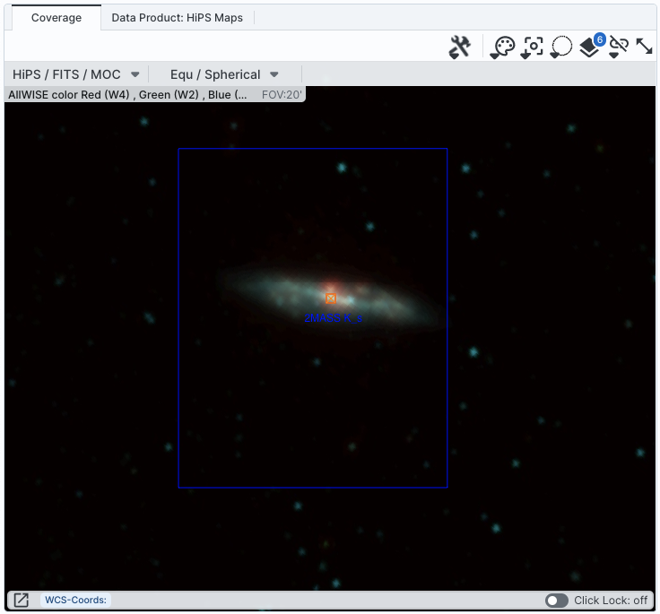
Coordinates
The pulldown menu allows you to select between coordinate systems.
Used in conjunction with the image readout and/or the coordinate
layer button (both described above), you can change what coordinate
system it uses.
"Catalog" loading
As discussed in the catalogs
section, you can upload several different types of files into the
tool, including files that have images, or mixtures of images and
tables.
If you load in a regions file but have no images loaded, the tool will
"hold onto" the regions file until you give it an image on which to
overlay the regions.
If you load in a mixture of images and tables, it will load both the
images and tables into different window panes.
If you select multiple images, you have the option of loading them all
into diferent frames or all into the same frame, where you can page
through the images.
Uploading a multi-HDU FITS file containing a mixture of tables and
images. (Note that in this case, all planes are selected and the lower
left gives a choice for loading all the images into one window or one
extension per window.)

and the result after loading that (note blue arrows to scroll through
image planes):
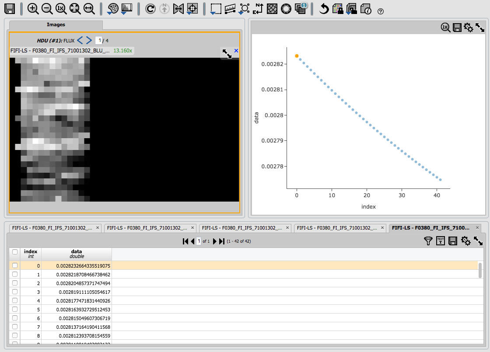
Uploading a FITS file with multiple image planes where only one plane
is selected:

This simply loads the image as if you have loaded an image (not a
catalog) from disk.